A complete self-drive loop of Romania with family-run guesthouses and guided city tours. Cross the Carpathians to Sibiu, sleep inside the citadel of Sighișoara, visit the Saxon fortified churches, then the wooden villages of Maramureș with its steam forest railway and Merry Cemetery, the painted monasteries of Bukovina, the Bicaz Gorge, Brașov with Bran and Peleș castles, and finally the Danube Delta. Two days are long: Brașov to Tulcea is about 350 km (5 to 6 hours) before the boat, and the public boat leaves at a fixed time, so we start very early or book a private boat transfer. A local travel assistant is on call by phone throughout, as well as our own 24/7 desk.
See it for yourself
Photos from the journey
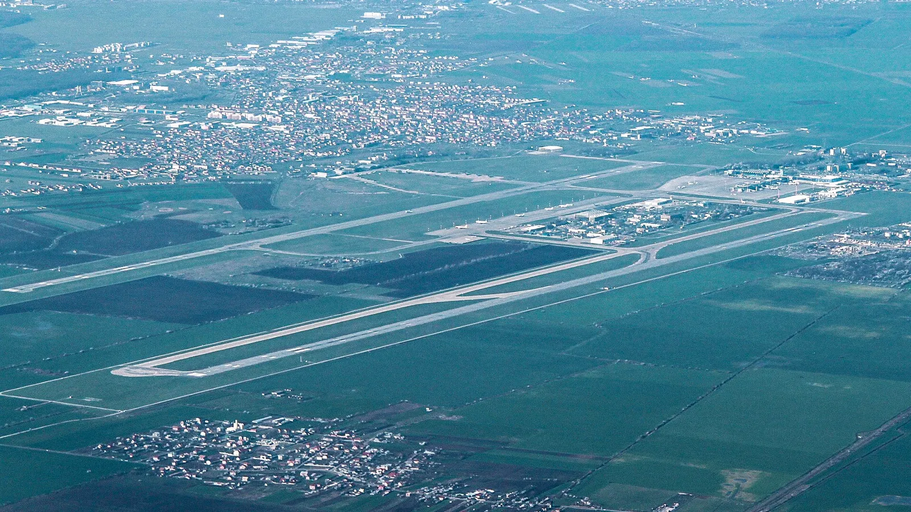
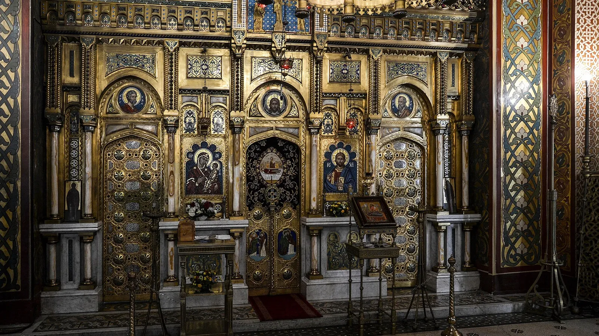
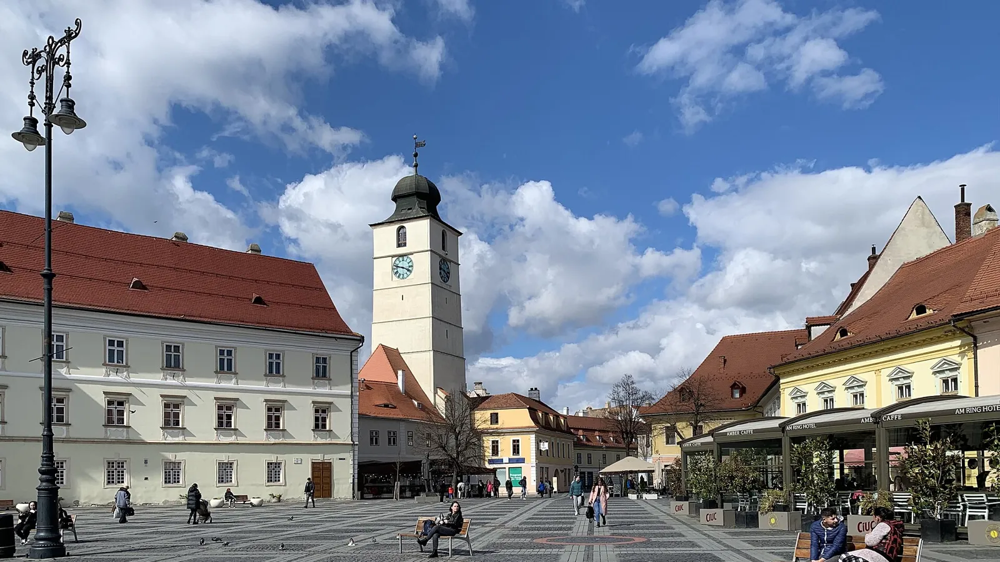
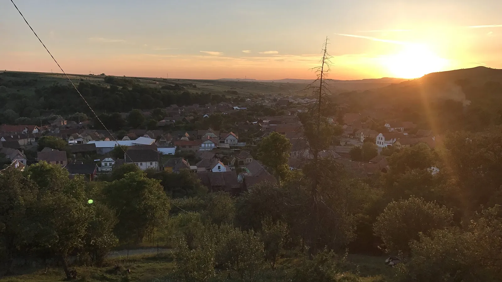
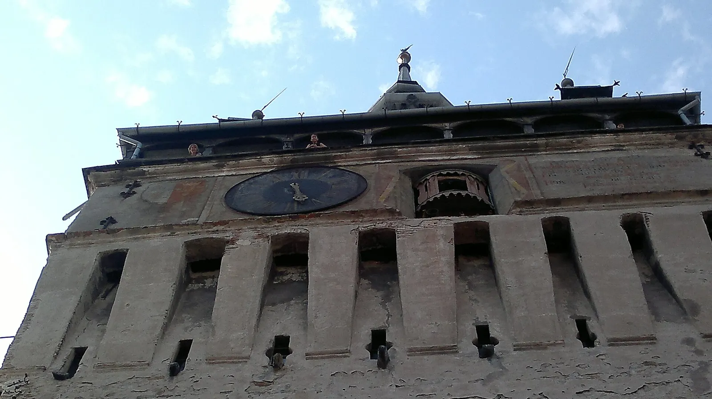
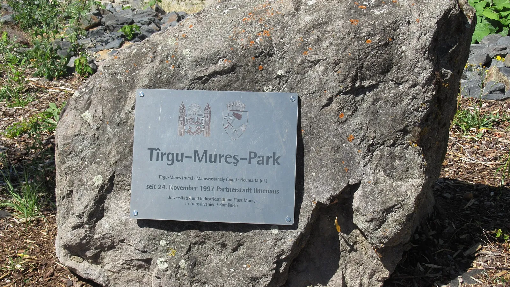
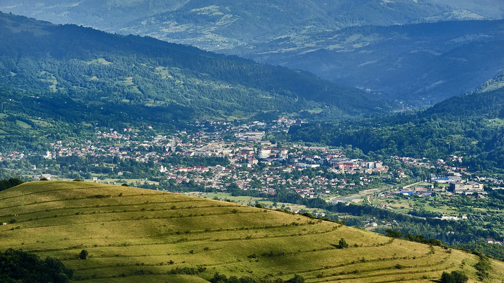
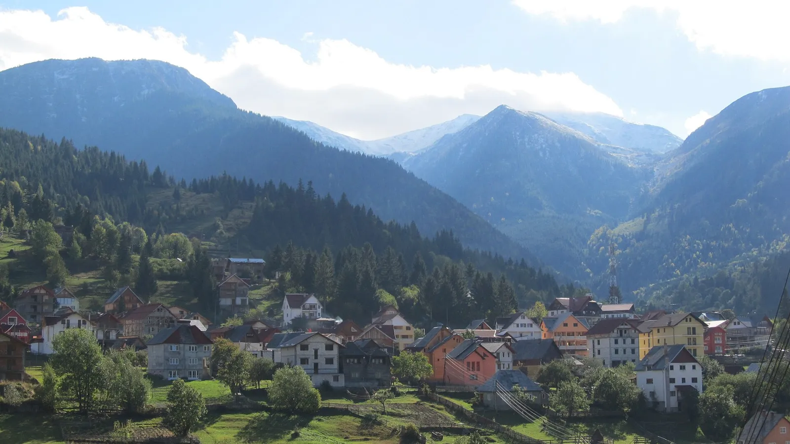
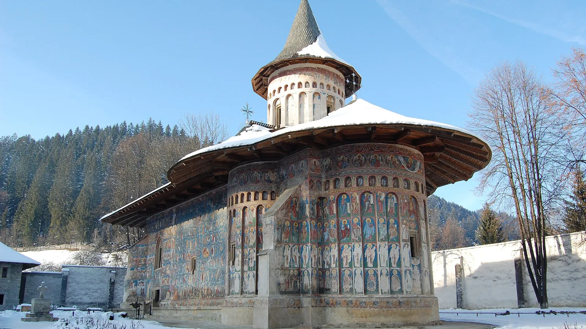
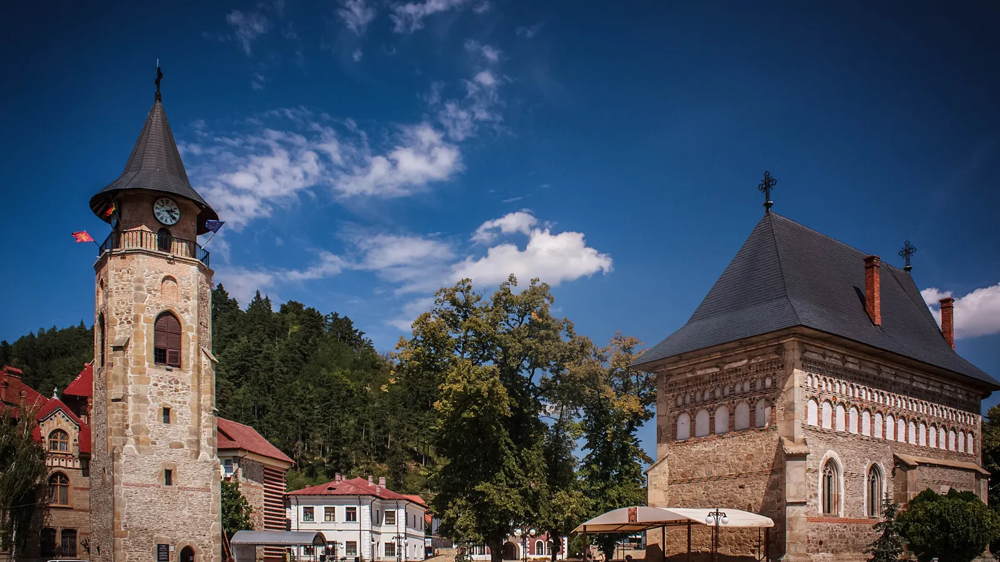
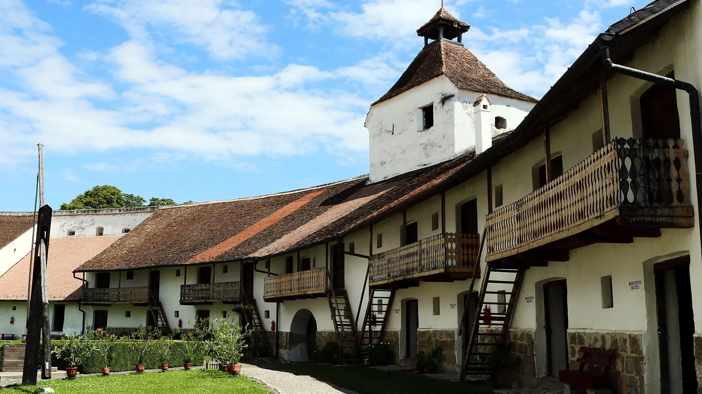
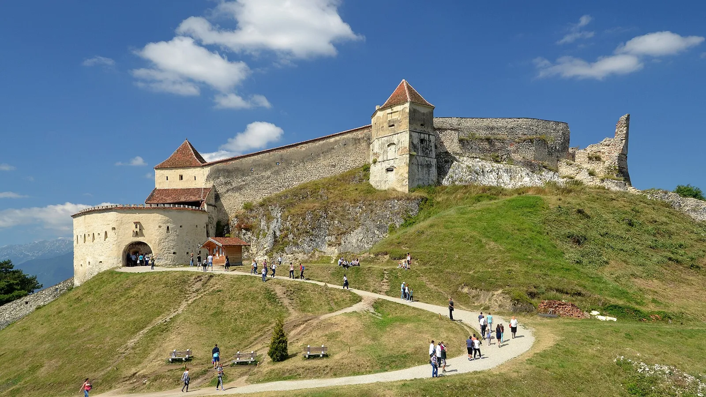
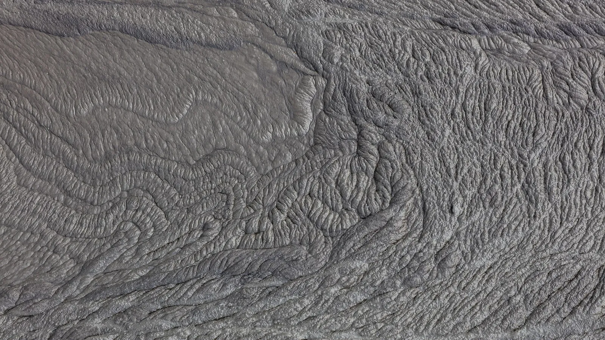
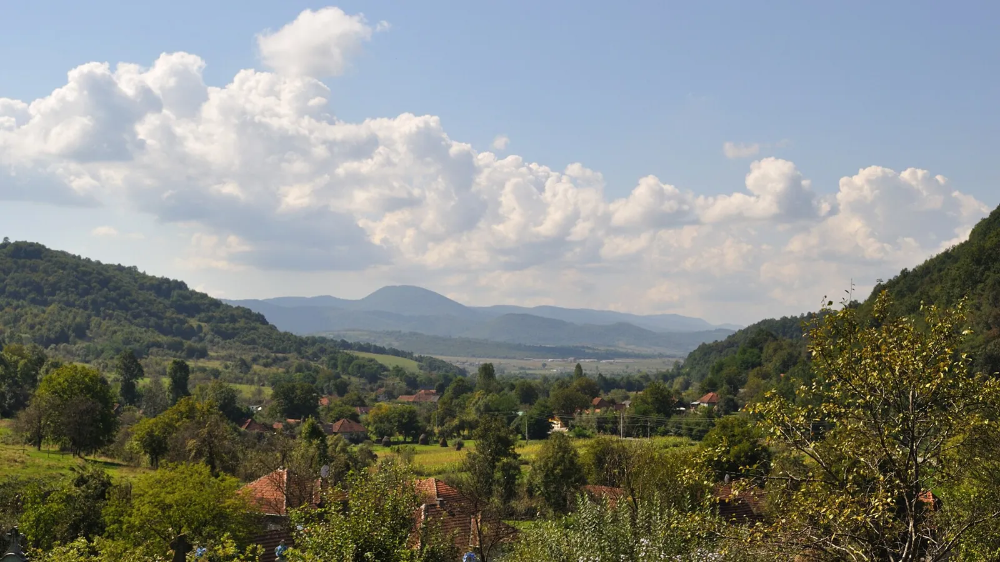
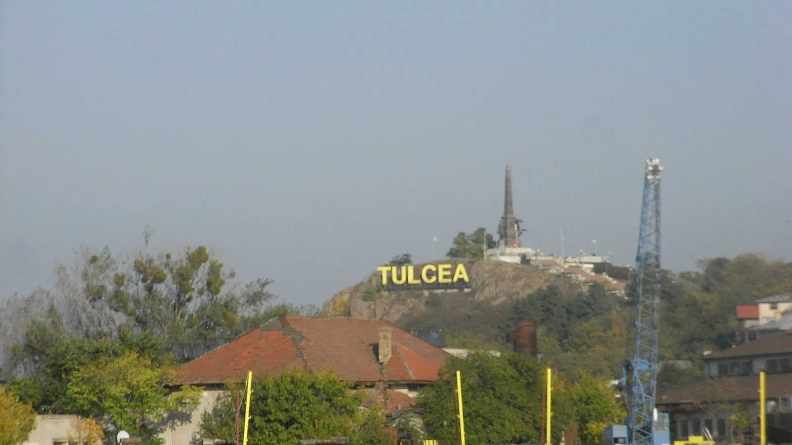

Where you go
The journey on one map
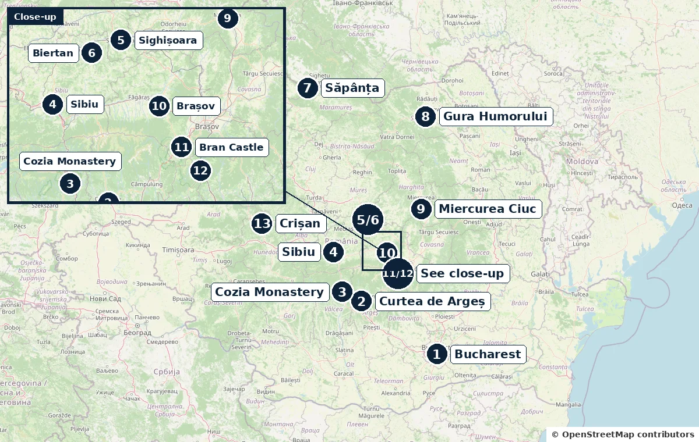
BucharestCurtea de ArgeșCozia MonasterySibiuSighișoaraBiertanSighetu MarmațieiSăpânțaGura HumoruluiVoroneț MonasteryBicaz GorgeMiercurea CiucBrașovBran CastlePeleș CastleTulceaCrișanBucharest
Day by day, in short
Daily travel brief
Distances are by road for the whole day. The full plan with timings comes with your detailed itinerary.
-
1
Arrive in Bucharest
- Collect your rental car: the deposit must be on a credit card in the driver's name; debit and forex cards are refused.
- Old Town and the Palace of the Parliament: parliament tours need your passport and booking a day ahead.
-
2
Northern Wallachia to Sibiu
- Monasteries ask women to cover their hair and wear skirts; wraps are lent at the door.
-
3
-
4
Saxon villages to Sighișoara
- Check in inside Sighișoara citadel: cars may enter the citadel only to unload; your host shows you where to park.
- The citadel is cobbled and steep; bring a small bag for the night.
-
5
Sighișoara and Biertan
- Vegetarian options in villages are limited; tell your guesthouse your diet the night before.
-
6
-
7
Maramureș: steam train and wooden churches
- Vaser Valley steam railway: runs on set days from about April to October; book ahead.
- Sunday mornings are for church; villagers wear traditional dress.
-
8
Over the Prislop and Tihuța passes into Bukovina
- Mountain roads have bends and few barriers; drive slowly.
-
9
The painted monasteries
Humor Monastery Moldovița Monastery
- Moldovița and Sucevița: these are working convents.
- Buy hand-painted eggs at Ciprian Porumbescu's or local workshops.
-
10
-
11
Hărman, Brașov and Bran Castle
- Bran Castle: arrive after 16:00 or early morning to avoid long queues.
- Return via the Poiana Brașov mountain resort.
-
12
Râșnov and Peleș Castle
- Peleș Castle, Sinaia: closed on Mondays and sometimes Tuesdays; check before you go.
- The DN1 road to Sinaia is busy at weekends.
-
13
-
14
The Danube Delta
- Mosquitoes are fierce at dusk from June to August; bring repellent and long sleeves.
-
15
Boat to Tulcea and drive to Bucharest
- A long day; your last night is in the city centre.
-
16
Return the car and fly home
- Return the car at the airport: allow 3 hours before the flight plus 30 minutes for the car return.
- Ask for the deposit release receipt when returning the car.
Local know-how
Travel hacks from our desk
Driving in Romania
Indian licence holders need an International Driving Permit. Buy the road vignette (rovinieta) online before you drive. Village roads have horse carts, cattle and slow tractors; drive in daylight.
Bears
Romania has Europe's largest brown bear population. Never feed or approach bears by the roadside, and keep car windows closed if one is near.
Hotel deposit
Use a credit card for the deposit or pre-authorisation at check-in, never a forex or debit card. Forex cards cannot hold funds, many hotels refuse them, and a credit-card hold is released faster.
Cards and cash
On card machines, always choose to pay in lei (RON), never in INR. Cards work in towns; carry lei in cash for village guesthouses, fuel stations and monastery entries.
Pickpockets
Busy stations, trams and squares are pickpocket hotspots. Keep passports in the hotel safe, carry a copy, and wear your bag in front in crowds.
Plugs, water and meal times
Plugs are the two round-pin type C and F at 230 volts (Switzerland uses type J; a type C plug fits). Tap water is safe to drink. Lunch is about 12:00 to 14:00 and dinner from about 18:30.
When to go
Best time to visit for this journey
Late May, June or September.
May to June and September to October. The Delta guesthouses and boats run from about April to October.
The package
What's included
Included
- 15 nights with breakfast in small hotels and guesthouses
- Rental car with unlimited mileage, comprehensive insurance and GPS
- Guided city tours in Sibiu, Sighișoara and Brașov
- Boat transfers Tulcea to Crișan and back
- Two dinners in the Danube Delta
- Danube Delta reserve fee
- Local travel assistant by phone, and 24/7 support from Blue Diamond Voyage
Not included
- International flights
- Schengen visa
- Fuel, parking, vignette and bridge tolls
- Entry fees
- Lunches and most dinners
- Travel insurance
- Optional bear watching and private Delta boats
The detailed itinerary
Some journeys are planned. Ours are crafted.
The full 16-day plan is ready: hour-by-hour timings, drive times, temple dress codes, food for your diet and a route map for every day. Tell us your dates and your city, and we'll send it to you on WhatsApp, shaped around you.
- Hour-by-hour timings
- A route map for every day
- Hotel and room details
- Visa and entry steps
- Vegetarian and Jain dining
24/7 travel desk+91 97148 59797+91 98242 21400
Photo and map credits
- Henri Coandă International Airport: Cristian Bortes, CC BY 2.0, via Wikimedia Commons
- Curtea de Argeș Monastery: Pudelek, CC BY-SA 4.0, via Wikimedia Commons
- Piața Mare Sibiu: Chainwit., CC BY 4.0, via Wikimedia Commons
- Slimnic: wuppertaler, CC BY-SA 4.0, via Wikimedia Commons
- Sighișoara Clock Tower: Albertdoris, CC BY-SA 4.0, via Wikimedia Commons
- Târgu Mureș: Giorno2, CC BY-SA 4.0, via Wikimedia Commons
- Viseu de Sus: Mihai Lucîț, CC BY 2.0, via Wikimedia Commons
- Borșa: Nenea hartia, CC BY-SA 4.0, via Wikimedia Commons
- Voroneț Monastery: Dstefanescu, Public domain, via Wikimedia Commons
- Piatra Neamț: Radueduard, CC BY-SA 3.0 ro, via Wikimedia Commons
- Hărman: Neighbor's goat, CC BY-SA 3.0 ro, via Wikimedia Commons
- Râșnov Fortress: Pudelek, CC BY-SA 4.0, via Wikimedia Commons
- Berca Mud Volcanoes: Diego Delso, CC BY-SA 4.0, via Wikimedia Commons
- Crișan: Utilizator:Țetcu Mircea Rareș at ro.wikipedia, CC BY-SA 3.0, via Wikimedia Commons
- Tulcea: Tiefkuehlfan, CC BY-SA 4.0, via Wikimedia Commons
- Henri Coandă International Airport: Cristian Bortes, CC BY 2.0, via Wikimedia Commons
- Maps: © OpenStreetMap contributors; road routes by OSRM.